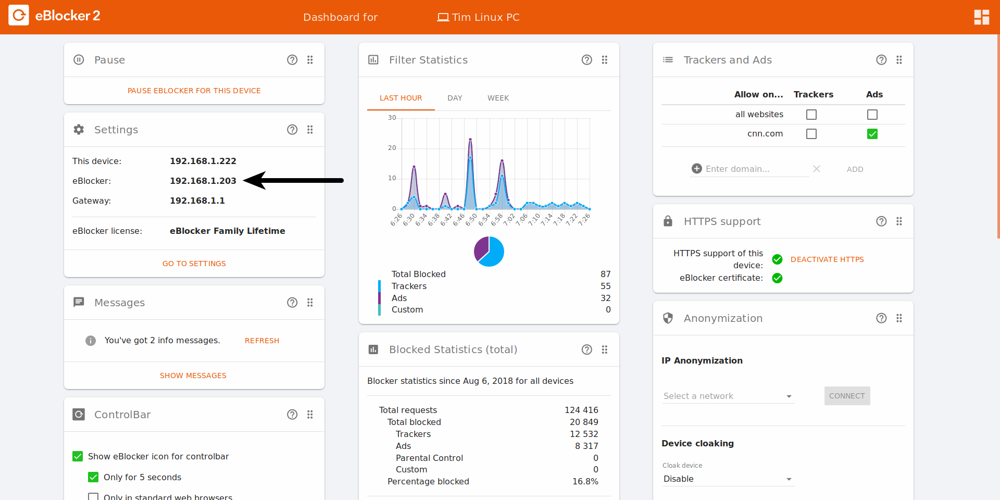

Deutsch | English
The most easy way to find the IP address of your eBlocker is on the dashboard, which you can open in your browser either with setup.eblocker.com, or eblocker.com.
You will find the IP address of your eBlocker on the "Settings" card behind "eBlocker:".

You can see the connected devices in your router settings. The eBlocker should be listed as "eblocker" in this list of connected devices.
Windows / macOS / Linux
In a terminal (Command Line / CMD), you can find all IP addresses in your network with the command "arp -a". The displayed addresses and information may look different depending on the operating system.
Android / iOS
On mobile devices you can scan your network with apps like " he.net Network Tools ".